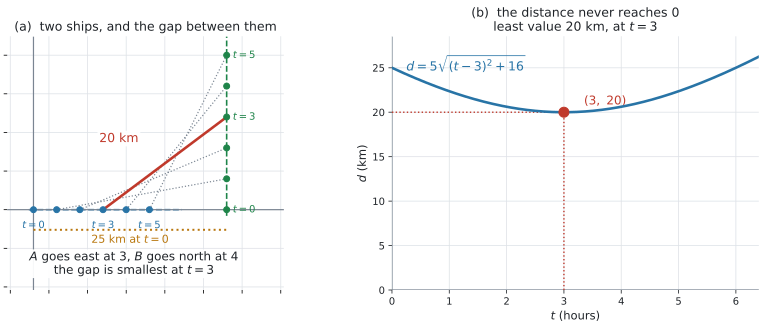

AHL 3.12a — Kinematics: constant velocity（等速度の運動）
- \(\mathbf{r} = \mathbf{r}_0 + \mathbf{v}t\) の \(\mathbf{r}_0\) と \(\mathbf{v}\) が何を表すかを言える。
- 時刻 \(t\) を入れて、position（位置）を求められる。
- speed（速さ）が \(\lvert \mathbf{v} \rvert\) であることを使える。
- \(2\) つの particle（粒子・物体）の、path（経路）が交わる点を求められる。
- 経路が交わることと collide（衝突する）ことが別だと説明できる。
- relative position（相対位置）\(\overrightarrow{AB} = \mathbf{r}_B - \mathbf{r}_A\) を \(t\) の式で書ける。
- \(\overrightarrow{AB} = \mathbf{0}\) になる \(t\) があるかで、衝突を判定できる。
- \(2\) つの物体の距離を \(t\) の式で書き、最接近の時刻と距離を求められる。
- \(3\) 次元でも、成分が \(1\) つ増えるだけで同じ計算ができる。
\[ \underbrace{\mathbf{r} = \mathbf{a} + \lambda\mathbf{b}}_{\text{AHL 3.11}} \qquad \longrightarrow \qquad \underbrace{\mathbf{r} = \mathbf{r}_0 + \mathbf{v}t}_{\text{AHL 3.12}} \tag{1}\]
| AHL 3.11 | AHL 3.12 | 変わったこと |
|---|---|---|
| \(\mathbf{a}\) | \(\mathbf{r}_0\) | \(t = 0\) のときの位置という意味が付いた |
| \(\lambda\) | \(t\) | 時刻という意味が付いた |
| \(\mathbf{b}\) | \(\mathbf{v}\) | 速度という意味が付いた。長さが速さになった |
式の形は同じですが、意味が付いたぶん、変えられなくなったものがあります（第2節）。
The idea
1. \(\mathbf{r} = \mathbf{r}_0 + \mathbf{v}t\)
constant velocity（等速度）で動く物体の、時刻 \(t\) での位置は
\[ \mathbf{r} = \mathbf{r}_0 + \mathbf{v}t \tag{2}\]
- \(\mathbf{r}\) … 時刻 \(t\) での位置ベクトル
- \(\mathbf{r}_0\) … \(t = 0\) のときの位置
- \(\mathbf{v}\) … velocity（速度）。向きと大きさを持つ
AHL 3.11 の \(\mathbf{r} = \mathbf{a} + \lambda\mathbf{b}\) で、\(\mathbf{a}\) を \(\mathbf{r}_0\)、\(\lambda\) を \(t\)、\(\mathbf{b}\) を \(\mathbf{v}\) と書き直しただけです（式 1、表 1）。

図 1 の (a) は \(\mathbf{r} = \begin{pmatrix} 1 \\ 2 \end{pmatrix} + t\begin{pmatrix} 2 \\ 1 \end{pmatrix}\) です。\(t = 0,\ 1,\ 2,\ 3,\ 4\) の位置に点を打ってあります。
\(1\) 秒ごとに、ちょうど \(\mathbf{v}\) だけ進みます。 ですから点は等間隔に並びます。これが「等速度」という言葉の中身です。
- \(t = 0\) がいつか。 「\(9\) 時に港を出る」なら、\(t\) は \(9\) 時からの時間です
- 単位は何か。 \(t\) が秒か時間か、距離が m か km か
- \(t\) の範囲。 ふつう \(t \geq 0\) です。負の \(t\) の答えは、意味を持ちません（第8節）
この \(3\) つを書き出してから計算に入ると、最後に単位や時刻でつまずきません。
2. \(\mathbf{v}\) の長さが speed です
speed（速さ）は、velocity の大きさです（AHL 3.10b 第4節）。
\[ \text{speed} = \lvert \mathbf{v} \rvert \tag{3}\]
\(\mathbf{v} = \begin{pmatrix} 2 \\ 1 \end{pmatrix}\) なら \(\lvert \mathbf{v} \rvert = \sqrt{5} \approx 2.24\) です。
AHL 3.11 第3節 では、direction vector を何倍しても同じ直線でした。
ここは違います。 図 1 の (b) を見てください。\(\mathbf{v} = \begin{pmatrix} 2 \\ 1 \end{pmatrix}\) の \(P\) と、\(\mathbf{v} = \begin{pmatrix} 4 \\ 2 \end{pmatrix}\) の \(Q\) は、同じ道すじを通りますが、速さが \(2\) 倍です。
\(t = 1\) のとき \(P\) は \((3,\ 3)\)、\(Q\) は \((5,\ 4)\) で、別の場所にいます。
\(t\) に時刻という意味が付いたので、\(\mathbf{v}\) の長さが答えを変えます。
\(\mathbf{r}_0\) も自由ではありません。 AHL 3.11 第3節 では \(\mathbf{a}\) は直線上のどの点でもよかったのですが、ここでの \(\mathbf{r}_0\) は \(t = 0\) にその物体が実際にいる点でなければなりません。
\(t\) 秒間に進む道のりは \(\lvert \mathbf{v} \rvert t\) です。等速度なので、道のりと変位の大きさが一致します（向きが変わらないからです）。
3. 経路と位置は、別のものです
- path（経路）… 物体が通る線。等速度なら直線です
- position（位置）… ある時刻での点 \(1\) つ
経路は AHL 3.11 の直線そのものです。ですから \(2\) つの物体の経路が交わる点は、AHL 3.11 第9節 のやり方で求まります。
ただし \(t \geq 0\) なので、実際に通るのは半分（半直線）だけです。求めた \(\lambda\)、\(\mu\) が両方とも \(0\) 以上なら、その点は本当に \(2\) 物体が通る点です。
\(2\) 直線で別の文字を使うのは、AHL 3.11 第9節 と同じ理由です。しかもこのページでは、その \(2\) つの値には時刻という意味があります。
4. 「経路が交わる」と「衝突する」は、別のことです
このページで、いちばん大事なところです。

図 2 の (a) では、\(A\) と \(B\) の経路が \((3,\ 5)\) で交わっています。しかし
- \(A\) がそこにいるのは \(t = 1\)
- \(B\) がそこにいるのは \(t = 5\)
\(4\) 秒ずれています。ぶつかりません。
- では、両方が \(t = 1\) に \((3,\ 5)\) にいます。これが collide（衝突する）です。
Do the particles collide? と聞かれたら、時刻まで確かめてください。
- 経路が交わる … 場所が同じ。\(\lambda\) と \(\mu\) は違ってよい
- 衝突する … 場所も時刻も同じ。\(\lambda = \mu\) でなければならない
Do the paths cross? と Do the particles collide? は、別の問いです。
5. relative position — \(\overrightarrow{AB} = \mathbf{r}_B - \mathbf{r}_A\)
\[ \overrightarrow{AB} = \mathbf{r}_B - \mathbf{r}_A \tag{4}\]
「ゴールひくスタート」でした（AHL 3.10b 第3節）。\(A\) から見て \(B\) がどこにいるか、を表します。
両方が動いているので、\(\overrightarrow{AB}\) は \(t\) の式になります。
\[ \overrightarrow{AB} = (\mathbf{r}_{0B} - \mathbf{r}_{0A}) + t(\mathbf{v}_B - \mathbf{v}_A) \tag{5}\]
これも「はじめの差」＋「\(t\) ×（速度の差）」の形です。\(\mathbf{v}_B - \mathbf{v}_A\) を relative velocity（相対速度）といいます。
6. 衝突の判定は \(\overrightarrow{AB} = \mathbf{0}\)
\(2\) つが同じ場所にいるということは、その差が \(\mathbf{0}\) だということです。
\[ \text{衝突する} \quad \Longleftrightarrow \quad \overrightarrow{AB} = \mathbf{0} \ \text{となる} \ t \geq 0 \ \text{がある} \tag{6}\]
成分ごとに \(0\) とおいて、\(t\) が全部そろうかを見ます。 AHL 3.11 第6節 の「\(1\) つの値が全成分で成り立つか」と、まったく同じ考え方です。\(t \geq 0\) でそろえば衝突です（例 3）。
\(\overrightarrow{AB} = \begin{pmatrix} 12-4t \\ -2-2t \end{pmatrix}\) なら
- \(1\) つ目 … \(12-4t = 0\) から \(t = 3\)
- \(2\) つ目 … \(-2-2t = 0\) から \(t = -1\)
そろいません。しかも \(t = -1\) は範囲の外です。 ですから衝突しません（例 2）。
\(\overrightarrow{AB}\) のある成分が、\(t\) によらず \(0\) のことがあります。\(2\) つの物体が、その向きにはずっと同じ位置にいる、ということです。
その成分は、はじめから満たされています。 残りの成分だけで \(t\) を決めます（演習 \(8\)）。
逆に、\(t\) によらず \(0\) でない成分があれば、その時点で衝突しません（演習 \(10\)）。
7. \(2\) つの距離は \(\lvert \overrightarrow{AB} \rvert\) です
時刻 \(t\) での \(2\) 物体の距離は
\[ d(t) = \lvert \overrightarrow{AB} \rvert = \sqrt{(\text{成分}_1)^2 + (\text{成分}_2)^2} \tag{7}\]
relative velocity（相対速度）\(\mathbf{v}_B - \mathbf{v}_A\) が \(\mathbf{0}\) でなければ、式 7 の中身は \(t\) の \(2\) 次式になります。\(\sqrt{\ }\) の中を先に整理してください。
\(\mathbf{v}_B = \mathbf{v}_A\) のときだけ別で、そのときは \(\overrightarrow{AB}\) が \(t\) によらず一定になり、中身は定数です（演習 \(6\)）。
8. 最接近する時刻と距離

図 3 の (a) は、\(A\) が東へ \(3\)、\(B\) が北へ \(4\) で進む様子です。点線は、そのときどきの \(A\) と \(B\) を結ぶ線分で、その長さが \(\lvert \overrightarrow{AB} \rvert\) です。
近づいてから、また離れます。 (b) はその距離 \(d\) のグラフです。
\(5\) つの手順があります。
相対速度が \(\mathbf{0}\) でないときの手順です。
| ステップ | すること |
|---|---|
| \(1\) | \(\overrightarrow{AB}\) を \(t\) の式で書く（式 5） |
| \(2\) | \(d^2\) を計算して、\(t\) の \(2\) 次式に整理する |
| \(3\) | 平方完成する（または頂点の \(t = -\dfrac{b}{2a}\) を使う） |
| \(4\) | その \(t\) を \(d\) に入れる。\(d^2\) ではなく \(d\) を答える |
| \(5\) | \(t \geq 0\) になっているかを確かめる |
図 3 の例では
\[ d^2 = 25t^2 - 150t + 625 = 25\left((t-3)^2 + 16\right) \]
\[ d = 5\sqrt{(t-3)^2+16} \]
\((t-3)^2\) が \(0\) 以上なので、\(t = 3\) のときが最小で、そのとき \(d = 5\sqrt{16} = 20\) です。
\(d \geq 0\) で、\(\sqrt{\ }\) は増加する関数なので、\(d^2\) を小さくすれば \(d\) も小さくなります。
ですから \(\sqrt{\ }\) を付けたまま平方完成する必要はなく、\(d^2\) で計算して構いません。
ただし、答えるのは \(d\) です。 \(d^2 = 400\) を答えにしないでください。\(400\) km ではなく \(20\) km です。
9. \(3\) 次元でも、成分が \(1\) つ増えるだけです
\[ \mathbf{r} = \begin{pmatrix} 1 \\ 0 \\ -2 \end{pmatrix} + t\begin{pmatrix} 2 \\ -3 \\ 1 \end{pmatrix} \]
衝突の判定も、\(3\) 成分すべてで同じ \(t\) が要る、というだけです（第6節、演習 \(8\)）。
距離も \(d = \sqrt{(\ )^2+(\ )^2+(\ )^2}\) になるだけで、平方完成の手順は変わりません。
図はかけなくなりますが、計算はできます（AHL 3.11 第7節）。
Worked examples
問題文は英語です。意味が理解できなかったら、問題文の下の「日本語訳」を開いてください。解説は日本語です。
例題 1 A particle starts at the point \((-3,\ 7)\) and moves with constant velocity \(\begin{pmatrix} 4 \\ -2 \end{pmatrix}\) m s\(^{-1}\). Time \(t\) is measured in seconds from the start.
(a) Write down the position vector of the particle at time \(t\).
(b) Find the position of the particle after \(5\) seconds.
(c) Find the speed of the particle, giving your answer to \(3\) significant figures.
(d) Find the time at which the particle crosses the \(x\)-axis.
日本語訳
ある粒子が点 \((-3,\ 7)\) を出発し、一定の速度 \(\begin{pmatrix} 4 \\ -2 \end{pmatrix}\) m s\(^{-1}\) で動きます。時刻 \(t\) は、出発してからの秒数です。
(a) 時刻 \(t\) での位置ベクトルを書きなさい。
(b) \(5\) 秒後の位置を求めなさい。
(c) この粒子の速さを、有効数字 \(3\) 桁で求めなさい。
(d) この粒子が \(x\) 軸を横切る時刻を求めなさい。
(a) 式 2 にあてはめるだけです。
\[ \mathbf{r} = \begin{pmatrix} -3 \\ 7 \end{pmatrix} + t\begin{pmatrix} 4 \\ -2 \end{pmatrix} \]
(b) \(t = 5\) を入れます。
\[ \begin{pmatrix} -3 \\ 7 \end{pmatrix} + 5\begin{pmatrix} 4 \\ -2 \end{pmatrix} = \begin{pmatrix} 17 \\ -3 \end{pmatrix} \]
(c) speed は \(\lvert \mathbf{v} \rvert\) です（式 3）。
\[ \lvert \mathbf{v} \rvert = \sqrt{4^2+(-2)^2} = \sqrt{20} = 2\sqrt{5} \approx 4.47 \ \text{m s}^{-1} \]
(d) \(x\) 軸の上では \(y = 0\) です。\(y\) 成分だけを見ます。
\[ 7 - 2t = 0 \quad \Longrightarrow \quad t = 3.5 \ \text{秒} \]
そのときの位置は \(\begin{pmatrix} -3+14 \\ 0 \end{pmatrix} = \begin{pmatrix} 11 \\ 0 \end{pmatrix}\) です。
検算。 (b) の位置と出発点の差が、\(5\mathbf{v}\) になるはずです。
\[ \begin{pmatrix} 17 \\ -3 \end{pmatrix} - \begin{pmatrix} -3 \\ 7 \end{pmatrix} = \begin{pmatrix} 20 \\ -10 \end{pmatrix} = 5\begin{pmatrix} 4 \\ -2 \end{pmatrix} \]
\(5\mathbf{v}\) に戻りました ✓ \(7-10 = -3\) を \(3\) としていたら、差の \(2\) つ目が \(-4\) になり、\(5\mathbf{v}\) になりません。
検算（(c) について）。 \(5\) 秒で進んだ道のりは \(5\lvert \mathbf{v} \rvert = 10\sqrt{5} \approx 22.4\) m のはずです。(b) の変位の大きさは \(\sqrt{20^2+(-10)^2} = \sqrt{500} = 10\sqrt{5}\) ✓ 等速度なので、この \(2\) つは一致します。
(a) \[\mathbf{r} = \begin{pmatrix} -3 \\ 7 \end{pmatrix} + t\begin{pmatrix} 4 \\ -2 \end{pmatrix}\]
(b) \[\begin{pmatrix} 17 \\ -3 \end{pmatrix}\]
(c) \[\lvert \mathbf{v} \rvert = \sqrt{4^2+(-2)^2} = 2\sqrt{5} \approx 4.47 \ \text{m s}^{-1}\]
(d) \[7-2t = 0 \ \Rightarrow \ t = 3.5 \ \text{s}\]
例題 2 Two particles \(A\) and \(B\) move with constant velocity. At time \(t\) seconds their position vectors, in metres, are
\[ \mathbf{r}_A = \begin{pmatrix} 1 \\ 2 \end{pmatrix} + t\begin{pmatrix} 2 \\ 3 \end{pmatrix}, \qquad \mathbf{r}_B = \begin{pmatrix} 13 \\ 0 \end{pmatrix} + t\begin{pmatrix} -2 \\ 1 \end{pmatrix} \]
(a) Show that the paths of the two particles cross, and find the point where they cross.
(b) Find the time at which each particle is at that point.
(c) Determine whether the particles collide.
(d) Explain why the paths crossing does not mean that the particles collide.
日本語訳
\(2\) つの粒子 \(A\)、\(B\) が一定の速度で動きます。時刻 \(t\) 秒における位置ベクトルは、メートル単位で上のとおりです。
(a) \(2\) つの経路が交わることを示し、交わる点を求めなさい。
(b) それぞれの粒子が、その点にいる時刻を求めなさい。
(c) \(2\) つの粒子が衝突するかどうかを判定しなさい。
(d) 経路が交わることが、粒子が衝突することを意味しない理由を説明しなさい。
(a) 経路は直線なので、AHL 3.11 第9節 のやり方です。文字は \(2\) 種類にします。
\[ \begin{pmatrix} 1+2\lambda \\ 2+3\lambda \end{pmatrix} = \begin{pmatrix} 13-2\mu \\ \mu \end{pmatrix} \]
\[ 1+2\lambda = 13-2\mu \quad \Longrightarrow \quad \mu = 6-\lambda \]
\[ 2+3\lambda = \mu = 6-\lambda \quad \Longrightarrow \quad 4\lambda = 4, \quad \lambda = 1 \]
\(\lambda = 1\)、\(\mu = 5\) です。交わる点は
\[ \begin{pmatrix} 1 \\ 2 \end{pmatrix} + \begin{pmatrix} 2 \\ 3 \end{pmatrix} = \begin{pmatrix} 3 \\ 5 \end{pmatrix} \]
(b) \(\lambda\) と \(\mu\) が、そのまま時刻です。
- \(A\) … \(t = 1\) 秒
- \(B\) … \(t = 5\) 秒
(c) 時刻が違うので、衝突しません（第4節）。
\(\overrightarrow{AB}\) でも確かめられます（式 6）。
\[ \overrightarrow{AB} = \begin{pmatrix} 13-2t \\ t \end{pmatrix} - \begin{pmatrix} 1+2t \\ 2+3t \end{pmatrix} = \begin{pmatrix} 12-4t \\ -2-2t \end{pmatrix} \]
\(12-4t = 0\) から \(t = 3\)、\(-2-2t = 0\) から \(t = -1\) です。そろわないので、衝突しません。
(d) Explain why なので、英語で理由を書きます。
試験ではこう書く
The paths crossing only says that the two straight lines share a point in space; it says nothing about when each particle is there. Here \(A\) reaches \((3,\ 5)\) at \(t = 1\) and \(B\) reaches it at \(t = 5\), so \(B\) arrives four seconds after \(A\) has already gone. A collision needs the same position at the same time, which is why the two parameters must be allowed to differ when finding the crossing point but must be equal for a collision.
（経路が交わるというのは、\(2\) 本の直線が空間の中で \(1\) 点を共有するというだけのことで、それぞれの粒子がいつそこにいるかについては何も言っていない。ここでは \(A\) は \(t = 1\) に \((3,\ 5)\) に着き、\(B\) は \(t = 5\) に着くので、\(A\) が去ったあと \(4\) 秒たってから \(B\) が到着する。衝突には、同じ位置に同じ時刻でいることが必要である。だからこそ、交点を求めるときは \(2\) つの parameter が違ってよく、衝突のときは等しくなければならない、という意味です。）
検算。 (a) で出した点を、使っていないほうの式に入れます。\(\mu = 5\) を \(\mathbf{r}_B\) に入れると
\[ \begin{pmatrix} 13 \\ 0 \end{pmatrix} + 5\begin{pmatrix} -2 \\ 1 \end{pmatrix} = \begin{pmatrix} 3 \\ 5 \end{pmatrix} \]
同じ点になりました ✓（AHL 3.11 の GDC 第6節）
検算（(c) について）。 \(t = 1\) での \(\overrightarrow{AB}\) を出します。\(\begin{pmatrix} 12-4 \\ -2-2 \end{pmatrix} = \begin{pmatrix} 8 \\ -4 \end{pmatrix}\) で、\(\mathbf{0}\) ではありません ✓ \(A\) が交点にいる時刻でも、\(B\) は \(x\) 方向に \(8\) m、\(y\) 方向に \(-4\) m ずれたところにいます。
(a) \[1+2\lambda = 13-2\mu, \qquad 2+3\lambda = \mu\] \[\lambda = 1, \quad \mu = 5, \qquad \text{crossing point } (3,\ 5)\]
(b) \(A\) is there at \(t = 1\); \(B\) is there at \(t = 5\).
(c) \[\overrightarrow{AB} = \begin{pmatrix} 12-4t \\ -2-2t \end{pmatrix}\] The components vanish at \(t = 3\) and \(t = -1\), which are different, so the particles do not collide.
(d) Crossing paths give the same position; a collision needs the same position at the same time. Here the arrival times are \(t = 1\) and \(t = 5\).
例題 3 Two particles \(A\) and \(B\) have position vectors, in metres at time \(t\) seconds,
\[ \mathbf{r}_A = \begin{pmatrix} 1 \\ 2 \end{pmatrix} + t\begin{pmatrix} 2 \\ 3 \end{pmatrix}, \qquad \mathbf{r}_B = \begin{pmatrix} 5 \\ 4 \end{pmatrix} + t\begin{pmatrix} -2 \\ 1 \end{pmatrix} \]
(a) Find \(\overrightarrow{AB}\) in terms of \(t\).
(b) Hence show that the particles collide, and state the time.
(c) Find the position at which they collide.
(d) Interpret the vector \(\overrightarrow{AB}\) in the context of the two particles.
日本語訳
\(2\) つの粒子 \(A\)、\(B\) の、時刻 \(t\) 秒における位置ベクトルは、メートル単位で上のとおりです。
(a) \(\overrightarrow{AB}\) を \(t\) の式で求めなさい。
(b) それを使って \(2\) つの粒子が衝突することを示し、その時刻を答えなさい。
(c) 衝突する位置を求めなさい。
(d) ベクトル \(\overrightarrow{AB}\) が、この \(2\) 粒子について何を表すかを述べなさい。
(a) ゴールひくスタートです（式 4）。
\[ \overrightarrow{AB} = \begin{pmatrix} 5-2t \\ 4+t \end{pmatrix} - \begin{pmatrix} 1+2t \\ 2+3t \end{pmatrix} = \begin{pmatrix} 4-4t \\ 2-2t \end{pmatrix} \]
(b) \(\overrightarrow{AB} = \mathbf{0}\) となる \(t\) を探します（式 6）。
\[ 4-4t = 0 \quad \Longrightarrow \quad t = 1 \]
\[ 2-2t = 0 \quad \Longrightarrow \quad t = 1 \]
\(2\) つとも \(t = 1\) でそろい、\(t \geq 0\) も満たします。 ですから \(t = 1\) 秒で衝突します。
(c) どちらかの式に \(t = 1\) を入れます。
\[ \begin{pmatrix} 1 \\ 2 \end{pmatrix} + \begin{pmatrix} 2 \\ 3 \end{pmatrix} = \begin{pmatrix} 3 \\ 5 \end{pmatrix} \]
(d) Interpret なので、\(2\) 粒子の言葉で書きます。
試験ではこう書く
\(\overrightarrow{AB}\) is the position of \(B\) as seen from \(A\) at time \(t\): its components say how far \(B\) is from \(A\) in the \(x\)- and \(y\)-directions at that moment. At \(t = 0\) it is \(\begin{pmatrix} 4 \\ 2 \end{pmatrix}\), so \(B\) starts \(4\) m from \(A\) in the \(x\)-direction and \(2\) m in the \(y\)-direction. The vector shrinks steadily to \(\mathbf{0}\) at \(t = 1\), which is the moment the two particles are in the same place.
（\(\overrightarrow{AB}\) は、時刻 \(t\) において \(A\) から見た \(B\) の位置である。その成分は、そのとき \(B\) が \(A\) から \(x\) 方向にいくつ、\(y\) 方向にいくつのところにいるかを表す。\(t = 0\) では \(\begin{pmatrix} 4 \\ 2 \end{pmatrix}\) なので、\(B\) は \(A\) から \(x\) 方向に \(4\) m、\(y\) 方向に \(2\) m のところから始まる。このベクトルはだんだん小さくなり、\(t = 1\) で \(\mathbf{0}\) になる。それが \(2\) 粒子が同じ場所にいる瞬間である、という意味です。）
検算。 (c) を、もう一方の式でも出します。
\[ \begin{pmatrix} 5 \\ 4 \end{pmatrix} + \begin{pmatrix} -2 \\ 1 \end{pmatrix} = \begin{pmatrix} 3 \\ 5 \end{pmatrix} \]
同じ点になりました ✓ どちらか片方だけで出しても、衝突していることの確認にはなりません。
(a) \[\overrightarrow{AB} = \begin{pmatrix} 4-4t \\ 2-2t \end{pmatrix}\]
(b) \[4-4t = 0 \ \Rightarrow \ t = 1; \qquad 2-2t = 0 \ \Rightarrow \ t = 1\] Both components vanish at the same time \(t = 1\) s, so the particles collide.
(c) \[\mathbf{r}_A(1) = \begin{pmatrix} 3 \\ 5 \end{pmatrix} = \mathbf{r}_B(1)\]
(d) \(\overrightarrow{AB}\) is the position of \(B\) relative to \(A\); it reaches \(\mathbf{0}\) exactly when they meet.
例題 4 Two ships \(A\) and \(B\) move with constant velocity. Taking east and north as the positive directions, with distances in kilometres and \(t\) in hours,
\[ \mathbf{r}_A = \begin{pmatrix} 0 \\ 0 \end{pmatrix} + t\begin{pmatrix} 3 \\ 0 \end{pmatrix}, \qquad \mathbf{r}_B = \begin{pmatrix} 25 \\ 0 \end{pmatrix} + t\begin{pmatrix} 0 \\ 4 \end{pmatrix} \]
(a) Find \(\overrightarrow{AB}\) in terms of \(t\).
(b) Show that the distance \(d\) between the ships satisfies \(d = 5\sqrt{(t-3)^2+16}\).
(c) Find the time at which the ships are closest, and the least distance between them.
(d) Interpret your answers to part (c) in the context of the two ships.
日本語訳
\(2\) 隻の船 \(A\)、\(B\) が一定の速度で進みます。東と北を正の向きとし、距離は km、\(t\) は時間の単位で、位置ベクトルは上のとおりです。
(a) \(\overrightarrow{AB}\) を \(t\) の式で求めなさい。
(b) \(2\) 隻の距離 \(d\) が \(d = 5\sqrt{(t-3)^2+16}\) を満たすことを示しなさい。
(c) \(2\) 隻が最も近づく時刻と、そのときの距離を求めなさい。
(d) (c) の答えを、この \(2\) 隻の文脈で解釈しなさい。
(a) 式 5 のとおりです。
\[ \overrightarrow{AB} = \begin{pmatrix} 25 \\ 4t \end{pmatrix} - \begin{pmatrix} 3t \\ 0 \end{pmatrix} = \begin{pmatrix} 25-3t \\ 4t \end{pmatrix} \]
(b) \(\sqrt{\ }\) の中を先に整理します（表 2 のステップ \(2\)）。
\[ d^2 = (25-3t)^2 + (4t)^2 = 625 - 150t + 9t^2 + 16t^2 = 25t^2 - 150t + 625 \]
\(25\) でくくって平方完成します。
\[ d^2 = 25\left(t^2 - 6t + 25\right) = 25\left((t-3)^2 - 9 + 25\right) = 25\left((t-3)^2 + 16\right) \]
\(d \geq 0\) なので
\[ d = 5\sqrt{(t-3)^2+16} \]
(c) \((t-3)^2 \geq 0\) で、\(t = 3\) のときだけ \(0\) になります。
\[ t = 3 \ \text{時間}, \qquad d = 5\sqrt{16} = 20 \ \text{km} \]
\(t = 3 \geq 0\) なので、意味のある答えです（表 2 のステップ \(5\)）。
(d) Interpret なので、船の言葉で書きます。
試験ではこう書く
The ships start \(25\) km apart and close on each other for three hours, after which they begin to separate again. The closest they ever come is \(20\) km, three hours after the start. They never meet: the least distance is \(20\) km, not \(0\), so there is no risk of collision on these courses.
（\(2\) 隻は \(25\) km 離れて出発し、\(3\) 時間のあいだ近づき、そのあとはまた離れていく。もっとも近づくのは出発から \(3\) 時間後で、そのときの距離は \(20\) km である。\(2\) 隻は出会わない。最小の距離が \(0\) ではなく \(20\) km なので、この進路では衝突の心配はない、という意味です。）
検算。 \(t = 3\) での位置を、直接出します。
\[ \mathbf{r}_A(3) = \begin{pmatrix} 9 \\ 0 \end{pmatrix}, \qquad \mathbf{r}_B(3) = \begin{pmatrix} 25 \\ 12 \end{pmatrix} \]
\[ \overrightarrow{AB} = \begin{pmatrix} 16 \\ 12 \end{pmatrix}, \qquad \lvert \overrightarrow{AB} \rvert = \sqrt{256+144} = \sqrt{400} = 20 \]
\(20\) km に戻りました ✓ 多くの計算ミスは、これで見つかります。
さらに \(t = 1\) でも見ます。\(\mathbf{r}_A(1) = \begin{pmatrix} 3 \\ 0 \end{pmatrix}\)、\(\mathbf{r}_B(1) = \begin{pmatrix} 25 \\ 4 \end{pmatrix}\) で \(\lvert \overrightarrow{AB} \rvert = \sqrt{484+16} = \sqrt{500} \approx 22.4\)、(b) の式でも \(5\sqrt{4+16} = 10\sqrt{5} \approx 22.4\) ✓ \(-150t\) の項を落として \(d^2 = 25(t^2+25)\) としていた場合、\(t = 0\) では両方 \(25\) で合ってしまいますが、\(t = 1\) では \(5\sqrt{26} \approx 25.5\) となり、ここで食い違います。
検算（(b) について）。 \(t = 0\) を入れます。\(d = 5\sqrt{9+16} = 5 \times 5 = 25\) で、これは出発時の距離 \(25\) km と一致します ✓
(a) \[\overrightarrow{AB} = \begin{pmatrix} 25-3t \\ 4t \end{pmatrix}\]
(b) \[d^2 = (25-3t)^2+(4t)^2 = 25t^2-150t+625 = 25\left((t-3)^2+16\right)\] \[d = 5\sqrt{(t-3)^2+16}\]
(c) \[t = 3 \ \text{hours}, \qquad d = 5\sqrt{16} = 20 \ \text{km}\]
(d) The ships are closest three hours after the start, and even then they are \(20\) km apart, so they do not meet.
Common errors
\(\mathbf{r} = \mathbf{v}t + \mathbf{r}_0\) と書くのは正しいのですが、中身を入れかえてしまう誤りです。
\(t\) が掛かっているほうが速度です（式 2）。AHL 3.11 の Common errors と同じ形の誤りです。
まず \(t = 0\) を入れてください。 出発点が出なければ、入れかえています。ただし \(t = 0\) だけでは足りません。 \(t = 1\) も入れて \(\mathbf{r}_0 + \mathbf{v}\) になるかまで見てください。
行き先が先です（式 4）。\(\overrightarrow{AB} = \mathbf{r}_B - \mathbf{r}_A\) です。
衝突の判定と距離だけなら、逆でも答えは変わりません。 \(\mathbf{0}\) になる \(t\) も、長さも同じだからです。
しかし「\(A\) から見た \(B\) の位置」を聞かれたら、符号がすべて逆になって不正解です。
平方完成で \(d^2\) の最小値 \(400\) が出たとき、\(400\) km と答えてしまう誤りです。
答えるのは \(d\) です。 \(\sqrt{400} = 20\) km です（第8節）。
単位で気づけます。 \(d^2\) の単位は km\(^2\) で、距離の単位ではありません。
\(t\) は時刻なので、ふつう \(t \geq 0\) です。
\(\overrightarrow{AB} = \mathbf{0}\) を解いて \(t = -1\) が出たら、それは「このまま逆回しにすれば重なる位置関係だった」というだけで、衝突ではありません（例 2）。
最接近でも同じです。頂点が \(t < 0\) にあるなら、\(t \geq 0\) の範囲では \(t = 0\) がいちばん近いことになります。
Using your GDC (TI-Nspire CX II)
1. 位置は、代入で出せます
Matrix として入れて、そのまま計算します（AHL 3.10a の GDC 第1節）。
\(\begin{bmatrix} -3 \\ 7 \end{bmatrix}+5 \times \begin{bmatrix} 4 \\ -2 \end{bmatrix}\)
\(\begin{pmatrix} 17 \\ -3 \end{pmatrix}\) が返ります（例 1）。
2. 名前を付けておくと、\(t\) を変えるのが楽です
- \(\begin{bmatrix} 1 \\ 2 \end{bmatrix} \ \to \ ra\)
- \(\begin{bmatrix} 2 \\ 3 \end{bmatrix} \ \to \ va\)
- \(\begin{bmatrix} 13 \\ 0 \end{bmatrix} \ \to \ rb\)
- \(\begin{bmatrix} -2 \\ 1 \end{bmatrix} \ \to \ vb\)
矢印 → は、ctrl を押してから var です（AHL 3.10a の GDC 第2節）。
そのあとは ra+1*va、rb+5*vb と打つだけです。
\(\overrightarrow{AB}\) も \(1\) 行で出せます。
(rb+3*vb)-(ra+3*va)\(1\) つの問題が終わったら、変数を消しておいてください（menu → Actions → Clear a-z）。
3. 交点は、連立方程式として
menu → Algebra の中の Solve System of Linear Equations を使います（AHL 3.11 の GDC 第3節）。
例 2 なら、変数 \(p\)、\(q\) として
1+2*p = 13-2*q
2+3*p = q\(\{1,\ 5\}\) が返ります。この \(2\) つが、それぞれの到着時刻です。
値が違うことを、そのまま答えに使ってください。 電卓は「衝突するか」までは教えてくれません。
4. 距離のグラフで、最接近を見る
ctrl + doc でページを足して Graphs を開き、\(d\) を \(x\) の関数として入れます。
\(f1(x) = \sqrt{\left(25 - 3x\right)^{2} + \left(4x\right)^{2}}\)
電卓の変数は \(x\) です。 ここでは \(x\) が時刻 \(t\) のつもりです。
menu → Analyze Graph → Minimum で、\(x\) の下限と上限を聞かれるので、頂点をはさむように選びます。\((3,\ 20)\) が出れば、例 4 と合っています。
これは関数のグラフなので Analyze Graph が使えます。 AHL 3.11 で parametric を使ったときとは違います。
答案には、平方完成の過程を書いてください（表 2）。
Show that と指定されている問題では、グラフだけでは点がもらえません。
5. 表で、近づき方を見る
グラフのページで ctrl + T を押すと、表が出ます。\(x = 0,\ 1,\ 2,\ \ldots\) の \(d\) が並ぶので、どこで折り返すかが見えます。
例 4 なら \(25,\ 22.36,\ 20.62,\ 20,\ 20.62,\ 22.36\) と並び、\(x = 3\) で折り返していることが分かります。
表の刻みは、はじめ \(1\) です（変えられます）。頂点がちょうど整数でないときは、刻みを細かくするか、GDC 第4節 の Analyze Graph を使ってください。
6. 検算のしかた
- \(t = 0\) を入れる。 出発点が出るか見る（例 1）
- 最接近の \(t\) での位置を、直接出す。 そこから \(\lvert \overrightarrow{AB} \rvert\) を計算して、答えと合うか見る（例 4）
- 交点は、使っていないほうの式に入れる（例 2）
- \(d\) の式に \(t = 0\) を入れる。 はじめの距離に戻るか見る
- \(t \geq 0\) を確かめる
\(2\) つ目がいちばん強い検算です。\(t\) を \(2\) つ選んで両方で合わせると、平方完成で項を落とした誤りまで見つかります（例 4）。
Exercises
各問題に、折りたたみが \(3\) つ付いています。日本語訳、解答例（答案用紙に書くべきこと。英語です）、解説（なぜそうなるか。日本語です）。
まず自分で解いて、次に解答例と見くらべてください。解説は、合わなかったときだけ開けば十分です。
1 A particle starts at \((2,\ -5)\) and moves with constant velocity \(\begin{pmatrix} -1 \\ 3 \end{pmatrix}\) m s\(^{-1}\). Find its position after \(4\) seconds, and its speed to \(3\) significant figures.
日本語訳
ある粒子が \((2,\ -5)\) を出発し、一定の速度 \(\begin{pmatrix} -1 \\ 3 \end{pmatrix}\) m s\(^{-1}\) で動きます。\(4\) 秒後の位置と、速さを有効数字 \(3\) 桁で求めなさい。
\[\begin{pmatrix} 2 \\ -5 \end{pmatrix} + 4\begin{pmatrix} -1 \\ 3 \end{pmatrix} = \begin{pmatrix} -2 \\ 7 \end{pmatrix}, \qquad \lvert \mathbf{v} \rvert = \sqrt{(-1)^2+3^2} = \sqrt{10} \approx 3.16 \ \text{m s}^{-1}\]
代入するだけです（式 2）。\(-5+12 = 7\) で、符号に注意してください。
速さは \(\lvert \mathbf{v} \rvert\) です（式 3）。\(\sqrt{10}\) は整数になりません。
検算。 変位が \(4\mathbf{v}\) になるはずです。\(\begin{pmatrix} -2 \\ 7 \end{pmatrix}-\begin{pmatrix} 2 \\ -5 \end{pmatrix} = \begin{pmatrix} -4 \\ 12 \end{pmatrix} = 4\begin{pmatrix} -1 \\ 3 \end{pmatrix}\) ✓ \(-5+12\) を \(-17\) としていたら、差の \(2\) つ目が \(-12\) になり、\(4\mathbf{v}\) になりません。
2 A particle has position vector \(\mathbf{r} = \begin{pmatrix} 6 \\ 1 \end{pmatrix} + t\begin{pmatrix} -2 \\ 4 \end{pmatrix}\) at time \(t\) seconds. Find the time at which the particle is at the point \((0,\ 13)\).
日本語訳
ある粒子の時刻 \(t\) 秒における位置ベクトルは \(\mathbf{r} = \begin{pmatrix} 6 \\ 1 \end{pmatrix} + t\begin{pmatrix} -2 \\ 4 \end{pmatrix}\) です。この粒子が点 \((0,\ 13)\) にいる時刻を求めなさい。
\[6-2t = 0 \ \Rightarrow \ t = 3; \qquad 1+4(3) = 13 \ \checkmark\]
The particle is at \((0,\ 13)\) when \(t = 3\) s.
\(1\) 成分から \(t\) を求め、もう一方でも合うことを確かめます（AHL 3.11 第6節 と同じ考え方）。
\(x\) だけ見て「\(t = 3\)」で止めないでください。 \(y\) が合わなければ、その点を通っていません。
検算。 \(t = 3\) をもとの式に入れ直します。\(\begin{pmatrix} 6 \\ 1 \end{pmatrix}+3\begin{pmatrix} -2 \\ 4 \end{pmatrix} = \begin{pmatrix} 0 \\ 13 \end{pmatrix}\) ✓ \(1+12\) を \(13\) 以外にしていたら、ここで合いません。
3 A particle starts at \((1,\ 0,\ -2)\) and moves with constant velocity \(\begin{pmatrix} 2 \\ -3 \\ 1 \end{pmatrix}\). Write down its position vector at time \(t\), and find its position when \(t = 6\).
日本語訳
ある粒子が \((1,\ 0,\ -2)\) を出発し、一定の速度 \(\begin{pmatrix} 2 \\ -3 \\ 1 \end{pmatrix}\) で動きます。時刻 \(t\) における位置ベクトルを書き、\(t = 6\) のときの位置を求めなさい。
\[\mathbf{r} = \begin{pmatrix} 1 \\ 0 \\ -2 \end{pmatrix} + t\begin{pmatrix} 2 \\ -3 \\ 1 \end{pmatrix}, \qquad \mathbf{r}(6) = \begin{pmatrix} 13 \\ -18 \\ 4 \end{pmatrix}\]
\(3\) 次元でも同じです（第9節）。\(3\) つとも \(6\) 倍して足します。
\(-2+6 = 4\) です。\(3\) つ目を落とさないでください。
検算。 変位が \(6\mathbf{v}\) になるはずです。\(\begin{pmatrix} 13 \\ -18 \\ 4 \end{pmatrix}-\begin{pmatrix} 1 \\ 0 \\ -2 \end{pmatrix} = \begin{pmatrix} 12 \\ -18 \\ 6 \end{pmatrix} = 6\begin{pmatrix} 2 \\ -3 \\ 1 \end{pmatrix}\) ✓ \(3\) つ目を \(2\) としていたら、差が \(4\) になって \(6\mathbf{v}\) に合いません。
4 Two particles have position vectors at time \(t\) seconds
\[ \mathbf{r}_A = \begin{pmatrix} 0 \\ 4 \end{pmatrix} + t\begin{pmatrix} 3 \\ -1 \end{pmatrix}, \qquad \mathbf{r}_B = \begin{pmatrix} 10 \\ -6 \end{pmatrix} + t\begin{pmatrix} -2 \\ 4 \end{pmatrix} \]
(a) Find \(\overrightarrow{AB}\) in terms of \(t\).
(b) Show that the particles collide, and find the time and the position of the collision.
日本語訳
\(2\) つの粒子の、時刻 \(t\) 秒における位置ベクトルは上のとおりです。
(a) \(\overrightarrow{AB}\) を \(t\) の式で求めなさい。
(b) \(2\) つが衝突することを示し、その時刻と位置を求めなさい。
(a) \[\overrightarrow{AB} = \begin{pmatrix} 10-5t \\ -10+5t \end{pmatrix}\]
(b) \[10-5t = 0 \ \Rightarrow \ t = 2; \qquad -10+5t = 0 \ \Rightarrow \ t = 2\] \[\mathbf{r}_A(2) = \begin{pmatrix} 6 \\ 2 \end{pmatrix} = \mathbf{r}_B(2)\] The particles collide at \((6,\ 2)\) when \(t = 2\) s.
\(\overrightarrow{AB} = \mathbf{r}_B - \mathbf{r}_A\) です（式 4）。\(-6-4 = -10\)、\(4-(-1) = 5\) で、符号を \(2\) か所とも間違えないでください。
\(2\) 成分とも \(t = 2\) でそろい、\(t \geq 0\) も満たします（式 6）。
検算。 \(t = 2\) を両方の式に入れます。\(\begin{pmatrix} 0 \\ 4 \end{pmatrix}+2\begin{pmatrix} 3 \\ -1 \end{pmatrix} = \begin{pmatrix} 6 \\ 2 \end{pmatrix}\)、\(\begin{pmatrix} 10 \\ -6 \end{pmatrix}+2\begin{pmatrix} -2 \\ 4 \end{pmatrix} = \begin{pmatrix} 6 \\ 2 \end{pmatrix}\) ✓ 同じ点になりました。片方だけでは、衝突の確認になりません。
5 Two particles have position vectors at time \(t\) seconds
\[ \mathbf{r}_A = \begin{pmatrix} 1 \\ 1 \end{pmatrix} + t\begin{pmatrix} 2 \\ 2 \end{pmatrix}, \qquad \mathbf{r}_B = \begin{pmatrix} 9 \\ 1 \end{pmatrix} + t\begin{pmatrix} -1 \\ 3 \end{pmatrix} \]
(a) Show that the paths cross, and find the point where they cross.
(b) Find the time at which each particle is at that point.
(c) State, with a reason, whether the particles collide.
日本語訳
\(2\) つの粒子の、時刻 \(t\) 秒における位置ベクトルは上のとおりです。
(a) \(2\) つの経路が交わることを示し、交わる点を求めなさい。
(b) それぞれの粒子が、その点にいる時刻を求めなさい。
(c) \(2\) つが衝突するかどうかを、理由を付けて答えなさい。
(a) \[1+2\lambda = 9-\mu, \qquad 1+2\lambda = 1+3\mu\] \[\lambda = 3, \quad \mu = 2, \qquad \text{crossing point } (7,\ 7)\]
(b) \(A\) is there at \(t = 3\) s; \(B\) is there at \(t = 2\) s.
(c) No. The particles reach \((7,\ 7)\) at different times, so they are never in the same place at the same time.
(a) 経路の交点なので、文字は \(2\) 種類です（AHL 3.11 第9節）。\(2\) 本目から \(2\lambda = 3\mu\)、\(1\) 本目に入れて \(1+3\mu = 9-\mu\)、つまり \(\mu = 2\)、\(\lambda = 3\) です。
(b) \(\lambda\) と \(\mu\) が、そのまま時刻です。
(c) State, with a reason なので、答えと理由の両方が要ります（第4節）。
検算。 \(\overrightarrow{AB}\) でも見ます。\(\overrightarrow{AB} = \begin{pmatrix} 9-t \\ 1+3t \end{pmatrix}-\begin{pmatrix} 1+2t \\ 1+2t \end{pmatrix} = \begin{pmatrix} 8-3t \\ t \end{pmatrix}\) です。\(8-3t = 0\) から \(t = \dfrac{8}{3}\)、\(2\) つ目の成分は \(t\) そのものなので \(0\) になるのは \(t = 0\) のときだけで、そろいません ✗ 衝突しないことが、別の道でも出ました。
試験ではこう書く
No, the particles do not collide. The paths do share the point \((7,\ 7)\), but \(A\) arrives there at \(t = 3\) and \(B\) at \(t = 2\), so \(B\) has already passed through a second before \(A\) gets there. Equivalently, \(\overrightarrow{AB} = \begin{pmatrix} 8-3t \\ t \end{pmatrix}\) is never the zero vector, since the second component is \(0\) only at \(t = 0\), where the first component is \(8\).
6 Two particles have position vectors at time \(t\) seconds
\[ \mathbf{r}_A = \begin{pmatrix} 0 \\ 0 \end{pmatrix} + t\begin{pmatrix} 1 \\ 0 \end{pmatrix}, \qquad \mathbf{r}_B = \begin{pmatrix} 0 \\ 5 \end{pmatrix} + t\begin{pmatrix} 1 \\ 0 \end{pmatrix} \]
Find \(\overrightarrow{AB}\) in terms of \(t\), and hence find the distance between the particles at time \(t\).
日本語訳
\(2\) つの粒子の、時刻 \(t\) 秒における位置ベクトルは上のとおりです。
\(\overrightarrow{AB}\) を \(t\) の式で求め、それを使って時刻 \(t\) における \(2\) 粒子の距離を求めなさい。
\[\overrightarrow{AB} = \begin{pmatrix} 0 \\ 5 \end{pmatrix}, \qquad d = 5\]
The distance is \(5\) for every value of \(t\).
速度が同じなので、相対速度 \(\mathbf{v}_B - \mathbf{v}_A\) が \(\mathbf{0}\) になります（式 5）。ですから \(\overrightarrow{AB}\) に \(t\) が残りません。
\(2\) 粒子は、ずっと \(5\) m 離れたまま平行に進みます。 最接近を聞かれても、\(d^2\) は \(t\) の \(2\) 次式にならず、定数です。
検算。 \(t = 0\)、\(t = 1\)、\(t = 10\) で位置を出します。\(A\) は \((0,0)\)、\((1,0)\)、\((10,0)\)、\(B\) は \((0,5)\)、\((1,5)\)、\((10,5)\) です。どの時刻でも \(\overrightarrow{AB} = \begin{pmatrix} 0 \\ 5 \end{pmatrix}\) ✓ \(t\) が消えたのは計算ミスではありません。
7 Two aircraft have position vectors at time \(t\) hours, in kilometres,
\[ \mathbf{r}_A = \begin{pmatrix} 10 \\ 30 \end{pmatrix} + t\begin{pmatrix} 2 \\ 1 \end{pmatrix}, \qquad \mathbf{r}_B = \begin{pmatrix} 10 \\ 5 \end{pmatrix} + t\begin{pmatrix} 5 \\ 5 \end{pmatrix} \]
(a) Find \(\overrightarrow{AB}\) in terms of \(t\).
(b) Show that the distance \(d\) between them satisfies \(d = 5\sqrt{(t-4)^2+9}\).
(c) Find the time at which they are closest, and the least distance between them.
日本語訳
\(2\) 機の航空機の、時刻 \(t\) 時間における位置ベクトルは、km 単位で上のとおりです。
(a) \(\overrightarrow{AB}\) を \(t\) の式で求めなさい。
(b) \(2\) 機の距離 \(d\) が \(d = 5\sqrt{(t-4)^2+9}\) を満たすことを示しなさい。
(c) \(2\) 機が最も近づく時刻と、そのときの距離を求めなさい。
(a) \[\overrightarrow{AB} = \begin{pmatrix} 3t \\ -25+4t \end{pmatrix}\]
(b) \[d^2 = (3t)^2+(4t-25)^2 = 25t^2-200t+625 = 25\left((t-4)^2+9\right)\] \[d = 5\sqrt{(t-4)^2+9}\]
(c) \[t = 4 \ \text{hours}, \qquad d = 5\sqrt{9} = 15 \ \text{km}\]
表 2 の \(5\) 段そのものです。
(a) \(10-10 = 0\)、\(5-30 = -25\)、速度の差は \(\begin{pmatrix} 3 \\ 4 \end{pmatrix}\) です。
(b) \(9t^2 + 16t^2 - 200t + 625 = 25t^2-200t+625\) です。\(25\) でくくると \(25(t^2-8t+25) = 25((t-4)^2-16+25)\) です。
(c) \(t = 4 \geq 0\) なので、意味のある答えです。\(d^2 = 225\) ではなく \(d = 15\) と答えてください。
検算。 \(t = 4\) での位置を直接出します。\(\mathbf{r}_A(4) = \begin{pmatrix} 18 \\ 34 \end{pmatrix}\)、\(\mathbf{r}_B(4) = \begin{pmatrix} 30 \\ 25 \end{pmatrix}\) で、\(\overrightarrow{AB} = \begin{pmatrix} 12 \\ -9 \end{pmatrix}\)、\(\lvert \overrightarrow{AB} \rvert = \sqrt{144+81} = 15\) ✓ 平方完成を \((t-4)^2+16\) などと間違えていたら、\(20\) になって合いません。
8 Two particles have position vectors at time \(t\) seconds
\[ \mathbf{r}_A = \begin{pmatrix} 1 \\ 2 \\ 3 \end{pmatrix} + t\begin{pmatrix} 1 \\ 0 \\ -1 \end{pmatrix}, \qquad \mathbf{r}_B = \begin{pmatrix} 5 \\ 2 \\ -1 \end{pmatrix} + t\begin{pmatrix} -1 \\ 0 \\ 1 \end{pmatrix} \]
Show that the particles collide, and find the time and the position of the collision.
日本語訳
\(2\) つの粒子の、時刻 \(t\) 秒における位置ベクトルは上のとおりです。
\(2\) つが衝突することを示し、その時刻と位置を求めなさい。
\[\overrightarrow{AB} = \begin{pmatrix} 4-2t \\ 0 \\ -4+2t \end{pmatrix}\]
\[4-2t = 0 \ \Rightarrow \ t = 2; \qquad -4+2t = 0 \ \Rightarrow \ t = 2\]
The middle component is \(0\) for every \(t\), so all three components vanish at \(t = 2\) s.
\[\mathbf{r}_A(2) = \begin{pmatrix} 3 \\ 2 \\ 1 \end{pmatrix} = \mathbf{r}_B(2)\]
\(3\) 次元でも手順は同じです（第9節）。
\(2\) つ目の成分は、\(t\) によらず \(0\) です。\(2\) 粒子は、その向きにはずっと同じところにいます。この成分は、はじめから満たされています（第6節 の callout）。
残りの \(2\) 成分がどちらも \(t = 2\) でそろうので、衝突します。
検算。 \(t = 2\) を両方の式に入れます。\(\begin{pmatrix} 1 \\ 2 \\ 3 \end{pmatrix}+2\begin{pmatrix} 1 \\ 0 \\ -1 \end{pmatrix} = \begin{pmatrix} 3 \\ 2 \\ 1 \end{pmatrix}\)、\(\begin{pmatrix} 5 \\ 2 \\ -1 \end{pmatrix}+2\begin{pmatrix} -1 \\ 0 \\ 1 \end{pmatrix} = \begin{pmatrix} 3 \\ 2 \\ 1 \end{pmatrix}\) ✓ \(3\) 成分とも一致しました。
9 A boat leaves a harbour at \(09{:}00\) and travels with constant velocity \(\begin{pmatrix} 12 \\ 5 \end{pmatrix}\) km h\(^{-1}\). Take the harbour as the origin, and let \(t\) be the number of hours after \(09{:}00\).
(a) Find the position of the boat at \(11{:}30\).
(b) Find the speed of the boat.
(c) Interpret the answer to part (b) in the context of the voyage.
日本語訳
ある船が \(9\) 時に港を出て、一定の速度 \(\begin{pmatrix} 12 \\ 5 \end{pmatrix}\) km h\(^{-1}\) で進みます。港を原点とし、\(t\) を \(9\) 時からの時間数とします。
(a) \(11\) 時 \(30\) 分における船の位置を求めなさい。
(b) この船の速さを求めなさい。
(c) (b) の答えを、この航海の文脈で解釈しなさい。
(a) \[t = 2.5: \qquad 2.5\begin{pmatrix} 12 \\ 5 \end{pmatrix} = \begin{pmatrix} 30 \\ 12.5 \end{pmatrix}\]
(b) \[\lvert \mathbf{v} \rvert = \sqrt{12^2+5^2} = 13 \ \text{km h}^{-1}\]
(c) The boat covers \(13\) km of sea every hour, in a fixed direction. After \(2.5\) hours it is \(2.5 \times 13 = 32.5\) km from the harbour in a straight line.
(a) \(9\) 時から \(11\) 時 \(30\) 分までは \(2.5\) 時間です。\(t\) の原点を取りちがえないでください（第1節 の callout）。
(b) \(\lvert \mathbf{v} \rvert = \sqrt{144+25} = 13\) です。
(c) Interpret なので、船の言葉で書きます。「\(13\) です」だけでは足りません。
検算。 港からの距離を \(2\) 通りで出します。位置から \(\sqrt{30^2+12.5^2} = \sqrt{1056.25} = 32.5\) km、速さからは \(2.5 \times 13 = 32.5\) km ✓ 等速度なので、この \(2\) つは一致します。
試験ではこう書く
The speed \(13\ \text{km h}^{-1}\) is how much sea the boat covers each hour, regardless of direction. Because the velocity is constant, the boat travels in a straight line, so after \(2.5\) hours it has covered \(2.5 \times 13 = 32.5\) km and is exactly \(32.5\) km from the harbour. If the boat had changed course, the distance travelled would still be \(32.5\) km but the distance from the harbour would be less.
10 Two particles have position vectors at time \(t\) seconds
\[ \mathbf{r}_A = \begin{pmatrix} 2 \\ 1 \end{pmatrix} + t\begin{pmatrix} 1 \\ 3 \end{pmatrix}, \qquad \mathbf{r}_B = \begin{pmatrix} 8 \\ -5 \end{pmatrix} + t\begin{pmatrix} -1 \\ 3 \end{pmatrix} \]
A student finds that the paths cross at \((4,\ 7)\) and concludes that the particles collide there. Identify the error and give the correct conclusion.
日本語訳
\(2\) つの粒子の、時刻 \(t\) 秒における位置ベクトルは上のとおりです。
ある生徒が、経路は \((4,\ 7)\) で交わると求め、そこで \(2\) 粒子が衝突すると結論しました。誤りを指摘し、正しい結論を書きなさい。
The crossing point is correct, but crossing paths do not imply a collision: the times must agree as well.
\[\overrightarrow{AB} = \begin{pmatrix} 6-2t \\ -6 \end{pmatrix}\]
The second component is \(-6\) for every \(t\), so \(\overrightarrow{AB}\) is never \(\mathbf{0}\) and the particles never collide.
Identify the error なので、どこが違うのかを名指ししてから、正しい結論を書きます。
交点 \((4,\ 7)\) 自体は合っています。 誤っているのは、そこから衝突を結論したところです（第4節）。
\(\overrightarrow{AB}\) を見ると、\(2\) つ目の成分が \(t\) によらず \(-6\) です。\(0\) になりようがないので、衝突しません（第6節 の callout）。
\(2\) 粒子は同じ \(y\) 方向の速度 \(3\) を持っているので、\(y\) 方向の差 \(-6\) が縮まりません。
検算。 時刻でも見ます。\(A\) は \(2+\lambda = 4\) から \(t = 2\)、\(B\) は \(8-\mu = 4\) から \(t = 4\) です。\(2\) 秒ずれています ✓ どちらの道でも「衝突しない」が出ました。
試験ではこう書く
The student’s crossing point is right, but the conclusion is not. Two paths crossing means the two straight lines share a point; a collision needs both particles to be at that point at the same time. Here \(A\) reaches \((4,\ 7)\) at \(t = 2\) and \(B\) reaches it at \(t = 4\). More directly, \(\overrightarrow{AB} = \mathbf{r}_B - \mathbf{r}_A = \begin{pmatrix} 6-2t \\ -6 \end{pmatrix}\), whose second component is \(-6\) for every \(t\), so \(\overrightarrow{AB}\) can never be the zero vector. The particles therefore never collide; they stay \(6\) apart in the \(y\)-direction because their \(y\)-velocities are equal.
参考：シラバスの原文
AHL 3.12 の Content 欄は \(2\) 行あります。このページはそのうち \(1\) 行目で、次の \(2\) 文でできています。
Vector applications to kinematics. Modelling linear motion with constant velocity in two and three dimensions.
\(1\) 行目に対応する Guidance は、次の \(3\) 行です。
Finding positions, intersections, describing paths, finding times and distances when two objects are closest to each other.
\(\boldsymbol{r} = \boldsymbol{r}_0 + \boldsymbol{v}t\).
Relative position of B from A is \(\overrightarrow{\text{AB}}\).
Guidance の \(1\) 行目に、\(5\) つのことが並んでいます。 位置を出す（第1節）、交点を出す（第3節）、経路を述べる（第3節）、\(2\) 物体が最接近する時刻と距離を出す（第8節）。
このページは、この \(5\) つに衝突の判定（第4節〜第6節）を加えて扱います。
\(2\) 行目の Content「Motion with variable velocity in two dimensions」は、次のページ AHL 3.12b です。